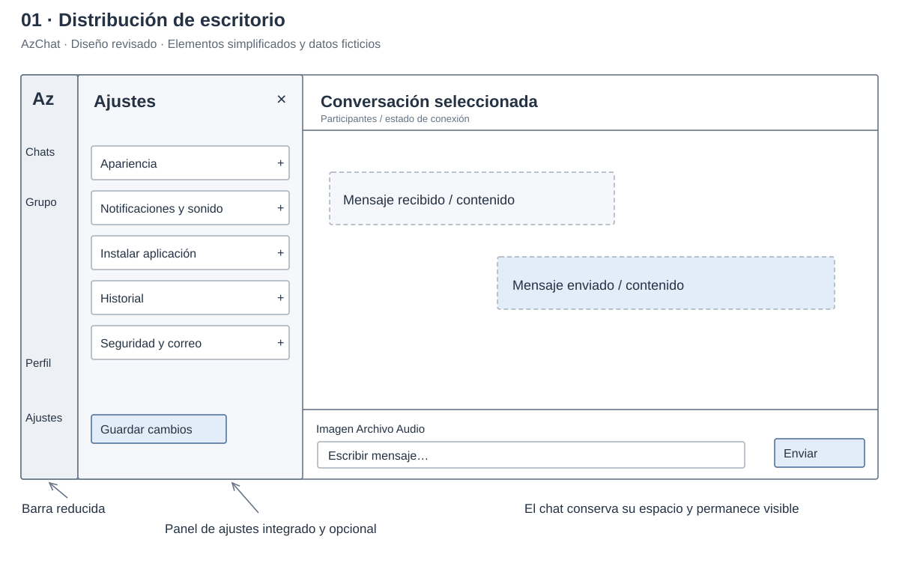
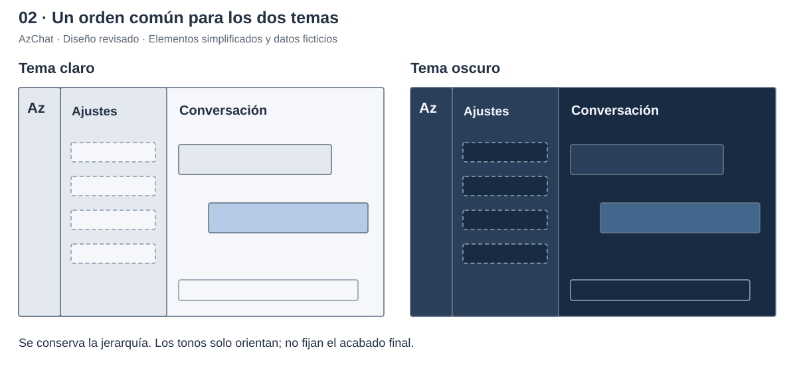
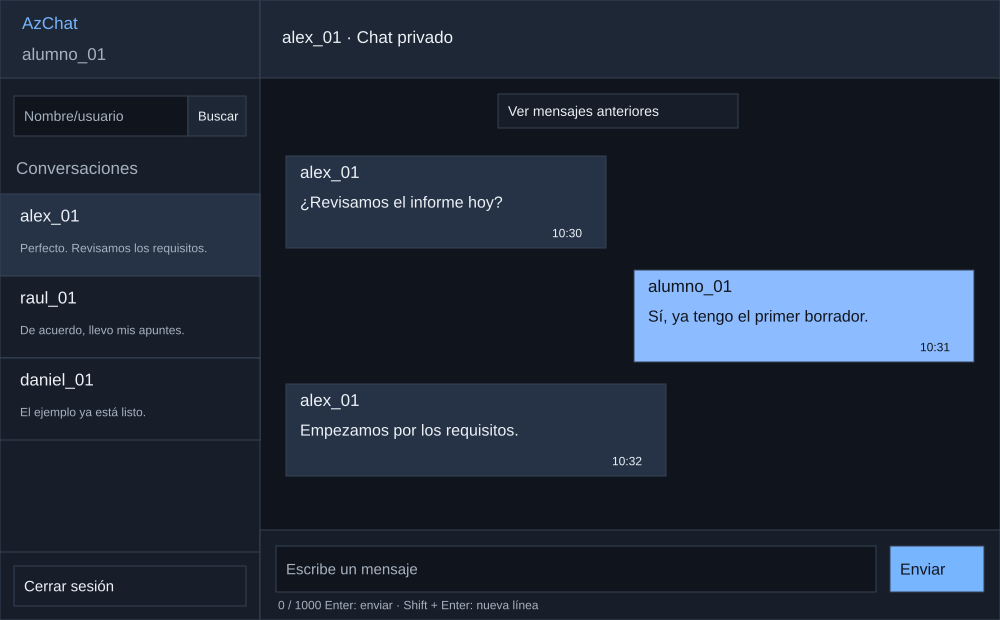
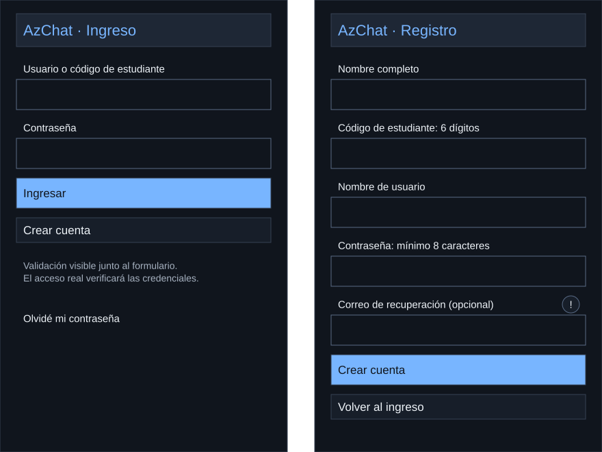
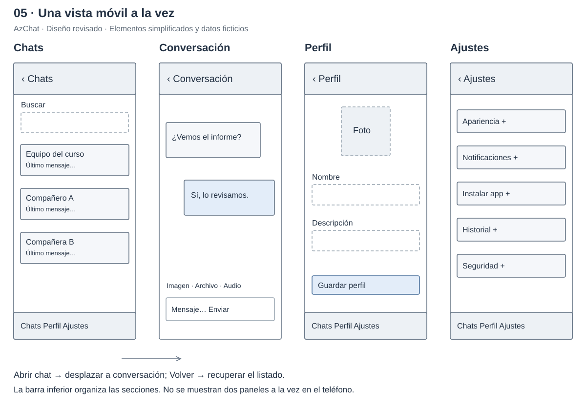

Paso 10 de 12 · Diseño de interfaz
Cómo se usa AzChat
Bocetos, navegación y confirmaciones de las pantallas.
Organización de las pantallas
Se propone una lista de conversaciones a la izquierda y el historial a la derecha. En computadora, Ajustes podrá abrirse junto al chat; en celular se mostrará una vista a la vez, con un control claro para volver.
Ayuda breve y confirmaciones
El botón ! permitirá consultar indicaciones sin llenar la pantalla de instrucciones. Los errores y las consecuencias de acciones importantes deberán permanecer visibles. El correo de recuperación será opcional y tendrá su propia verificación.
Bocetos del diseño
Los esquemas siguientes muestran la distribución, el color y el contenido de ejemplo. Se conserva la línea visual de paneles unidos; el acceso incorpora una pequeña ampliación para el correo opcional y la ayuda.
Esquemas de las pantallas


Ampliar boceto

Ampliar boceto

Ampliar boceto

Ampliar boceto

Ampliar bocetoExplorar el boceto
Abrir prototipo de planificación
Utiliza datos ficticios y simula las acciones para revisar el diseño.